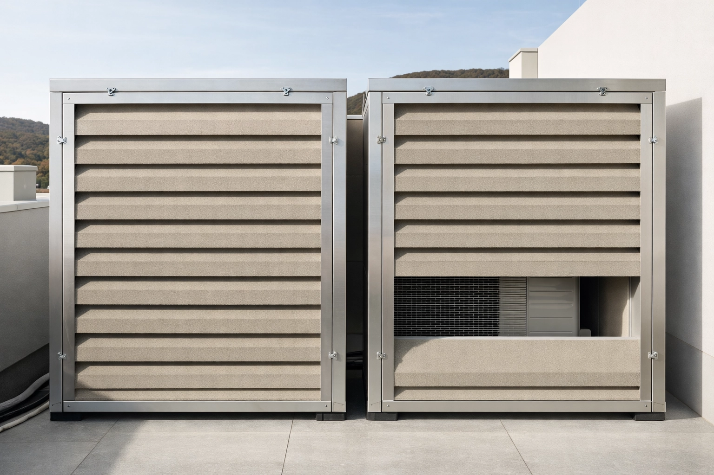

Ob Wärmepumpe im Garten, Lokal im Erdgeschoß oder Betriebsanlage: Wir prognostizieren und messen, wie laut es beim Nachbarn wird, und erstellen Nachweise und Gutachten für Bauverfahren, Gewerbebehörde und Streitfälle — in Wien und Niederösterreich.
Die Baubehörde will einen Lärmnachweis, oder der Nachbar beschwert sich. Nachweis nach Wiener Leitfaden oder OIB-Richtlinie 5 — meist ohne Messung.
Musik, Anlage oder Gerät — nachts, immer wieder. Wir messen bei Ihnen, wenn es passiert, und dokumentieren es nachvollziehbar.
Grenzwerte aus dem Betriebsanlagenbescheid einhalten, Begrenzer einmessen, Beschwerden von Anrainern vorbeugen.
Schalltechnische Unterlagen für die Gewerbebehörde: Prognose, Messung und Beurteilung nach ÖAL-Richtlinie 3 Blatt 1.
Flächendeckende Schallpegelmessung und Darstellung als Lärmkarte — für Betriebsstätten, Liegenschaften und Planungsgebiete. Grundlage für Maßnahmenprogramme und behördliche Stellungnahmen.
Vollständige schalltechnische Gutachten zur Erfassung und Bewertung von Lärmimmissionen — verwertbar für Betriebsanlagengenehmigungen, Umwidmungsverfahren und behördliche Prüfungen.
Privatgutachten für Nachbarschaftskonflikte und Verwaltungsverfahren — mit dokumentierter Messkette, nachvollziehbarer Methodik und Bewertung nach ÖAL-Richtlinie und ÖNORM.
Schallpegelmessung und Beurteilung nach TRLV Lärm Teil 3 für Arbeitsstätten — als Grundlage für Lärmminderungsmaßnahmen und als Nachweis gegenüber der Arbeitsinspektion.
Schalltechnische Einreichunterlagen für Betriebsanlagengenehmigungen nach GewO und AWG — mit Prognoseberechnung, Messung und normgerechter Bewertung nach ÖAL-Richtlinien.
Schallausbreitung nach ÖNORM ISO 9613-2 mit unserer eigenen Software Lyzer Immission — für geplante Anlagen, mit Abschirmung, Reflexion und Gelände. So wissen Sie vor der Investition, ob es passt.

Wenn es nicht passt
Wir rechnen zurück, welches Gerät, welcher Standort oder welche Wand reicht.
Geplante Anlagen rechnen wir aus Datenblatt und Lageplan. Bestehenden Lärm messen wir vor Ort mit Klasse-1-Messtechnik — Dauerschallpegel, Spitzenpegel, Frequenzspektren, getrennt nach Tag, Abend und Nacht.
Bewertung nach dem Regelwerk, das für Ihren Fall gilt — Wiener Leitfaden haustechnische Anlagen, OIB-Richtlinie 5, ÖNORM S 5021 oder ÖAL-Richtlinie 3 Blatt 1 — mit klarer Aussage, ob der Grenzwert eingehalten ist.
Wird der Grenzwert überschritten, rechnen wir Varianten: anderes Gerät, anderer Standort, Schallschutzwand oder Einhausung — mit ihrer Wirkung in dB.
Vollständiges schriftliches Gutachten mit Rohdaten, Auswertung, Bewertung und Schlussfolgerungen — für Einreichung, Genehmigungsverfahren oder Streitfall.
ÖAL-RL 3
Lärmimmission Österreich
Österreichische Arbeitsringrichtlinie für die Bewertung von Schallimmissionen — Maßstab für die meisten behördlichen Verfahren in Österreich.
ÖNORM S 5021
Schallschutzstufen
Norm für die Beurteilung von Schallimmissionen auf Basis von Schallschutzstufen — für Wohngebiete, Mischgebiete und Betriebsgebiete in Österreich.
TRLV Lärm Teil 3
Arbeitsschutz
Technische Regel zur Lärm-Vibrations-Arbeitsschutzverordnung — verpflichtend für Arbeitgeber bei Überschreitung der Auslösewerte (80/85 dB(A)).
GewO / AWG
Genehmigungsrecht
Betriebsanlagengenehmigungen nach Gewerbeordnung und Abfallwirtschaftsgesetz erfordern schalltechnische Einreichunterlagen — wir erstellen diese normgerecht und behördenkonform.
Neue oder geänderte Betriebsanlage
Anlagengenehmigung nach GewO, AWG oder UVP erfordert schalltechnischen Nachweis — inkl. Messung des Ist-Zustands und Prognose für den Planzustand.
Widmungs- und Umwidmungsverfahren
Bei Umwidmung von Betriebsgebieten zu Wohngebieten oder umgekehrt sind Schallimmissionsgutachten zur Beurteilung der Nutzungsverträglichkeit erforderlich.
Arbeitsschutzpflicht (TRLV-3)
Produktions- und Gewerbebetriebe mit Lärmbelastung über den Auslösewerten sind verpflichtet, Lärmminderungsmaßnahmen zu planen und deren Wirkung messtechnisch nachzuweisen.
Rechtsstreitigkeiten & Einsprüche
Privatgutachten bei Nachbarschaftsstreit, Einsprüchen im Bauverfahren und Beschwerden über Anlagen.
Eigene Software
Für Immissionsprognosen rechnen wir mit unserer eigenen Software: Wiener Leitfaden, OIB-Richtlinie 5 und ÖAL-Richtlinie 3 Blatt 1, Ausbreitung nach ÖNORM ISO 9613-2 mit Abschirmung und Reflexion, Einhausungen nach EN ISO 15667. Baukörper, Widmung und Grundgrenzen holen wir für Wiener Adressen direkt aus den offenen Daten der Stadt und dem Kataster.
Der Rechenkern ist gegen die Prüfaufgaben der ISO/TR 17534-3 und gegen ein bestehendes, unterschriebenes Gutachten geprüft. Für Sie heißt das: Ein einfacher Fall ist rasch erledigt, ein komplexer bleibt nachvollziehbar.
Schildern Sie uns Ihren Fall — Wärmepumpe, Lokal, Betriebsanlage oder Streit mit dem Nachbarn. Sie bekommen eine Einschätzung und ein Angebot.